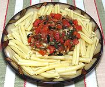

|
Uncooked Sauce for PastaItaly | ||||
| For 12 oz: Effort: Sched: DoAhead: |
Pasta ** 3 hrs Best |
Especially good for hot summer days, this flavorful sauce is easy to make. Use with any short pasta shape with good sauce gripping power (ridges, scoops, etc.). It is shown here with Casarecce. | |||
|
|
1-1/4 1 3 4 2 2 1/4 1 1/4 tt 12 |
# t oz oz cl T c T t oz |
Tomatoes ripe Salt Olives black (1) Onion white Garlic Herb (2) Olive Oil, ExtV Capers, drained Pepper Tabasco Sauce Pasta |
Prep - (2-1/2 hrs, 25 min work)
|